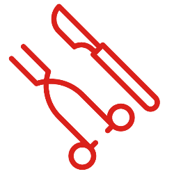

-
 Crescimento Profissional
Crescimento Profissional
- Diversos Recursos
-
 Compromisso no Aprendizado
Compromisso no Aprendizado
-  Experiência Clínica
- Comodidade
- Reconhecimento Internacional
O constante aprimoramento teórico e prático é uma necessidade do profissional de medicina
moderno. As tecnologias e suas aplicações evoluem e há a necessidade de aprimoramento contínuo!
Nos nossos cursos, além das aulas, você terá acesso a centenas de testes, chats, webinários e
grupos exclusivos para troca de conhecimentos e resolução de dúvidas.
Uma equipe totalmente dedicada ao compromisso de melhora na qualidade do seu exame de Doppler
vascular. A didática e a capacidade de transmitir informação são nossos grandes diferenciais!
A equipe da Fluxo Cursos é integralmente formada por cirurgiões vasculares com título de Ýrea de
Atuação em Ecografia Vascular com Doppler e em atividade clínico-cirúrgica-ecográfica.
Nossa plataforma pode ser logada a partir de qualquer dispositivo, facilitando o seu acesso à
carga teórica tanto do curso online como dos cursos presenciais, permitindo o máximo
aproveitamento do seu tempo de estudo.
Nosso fundador e instrutor, Dr. Robson Barbosa de Miranda, tem reconhecimento internacional na
área de Doppler Vascular, já tendo sido palestrante e recebido alunos de diversos países.